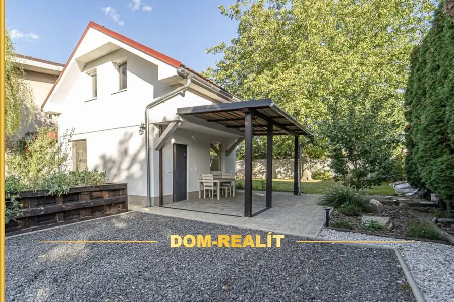

Príjemný 2-izbový byt s veľkým balkónom | 15 minút do BA
Most pri Bratislave
- Dispozícia2-izbový
- Plocha51.85 m²
- Poschodie1.
- StavNovostavba
- VlastníctvoOsobné
O nehnuteľnosti
Ponúkame na predaj príjemný 2-izbový byt s veľkým balkónom v modernom bytovom dome na ulici M. R. Štefánika v Moste pri Bratislave. Bývanie, ktoré spája pokoj vidieka s výbornou dostupnosťou do Bratislavy, vzdialenej len 15 minút.Byt:+ celková výmera: 51,85 m2 (45,2 m2 byt + 4,3 m2 balkón + 2,35 m2 pivničná kobka)+ 1. poschodie z 3 s výťahom (nie je to prízemie) v bytovom dome z roku 2010+ výborná dispozícia s množstvom úložného priestoru vďaka veľkému šatníku, pivničnej kobke a spoločnej kočikárni, kde si môžete odložiť svoje bicykle+ nízke mesačné náklady - pre 4 člennú rodinu okolo 160 eur+ vlastné vykurovanie a ohrev vody plynovým kotlom+ veľký balkón s východnou orientáciou, ideálny na rannú kávičku+ dostupný vysokorýchlostný optický internet (Telekom, Orange, Progres)+ predáva sa zariadený s možnosťou vypratania nábytku a spotrebičov podľa dohody+ byt je okamžite k dispozícii bez tiarch s možnosťou financovania cez hypotekárny úverParkovanie:+ bezplatné parkovanie na parkovisku priamo pred bytovým domom – bez nutnosti investovať do kúpy vlastného parkovacieho miestaLokalita:+ bytový dom sa nachádza v príjemnom a pokojnom vidieckom prostredí, bude sa Vám tu páčiť+ výborná dopravná dostupnosť: Autom ste vďaka novému diaľničnému spojeniu za 15 minút v Bratislave, Autobusom: zastávka je len 3 minúty peši, s pravidelnými spojmi do Bratislavy+ výborná občianska vybavenosť: v pešej dostupnosti OC Ponte (Lidl, DM drogéria, lekáreň, Pepco, Kraj), Billa, Terno, škola, škôlka, pošta, železiarstvo, kaviarne a reštaurácie+ možnosti aktívneho oddychu – cyklotrasy, miesta vhodné na beh alebo príjemné prechádzky, detské ihriskáZaujal Vás tento krásny byt? Príďte sa naň pozrieť a možno nájdete svoj nový domov.Pre viac informácií, alebo dohodnutie obhliadky ma kedykoľvek kontaktujte telefonicky: 0907 888 808, alebo e-mailom: lubos@dom-realit.skPre klientov som k dispozícii aj počas víkendov.+ NEPLATÍTE sprostredkovateľskú províziu© Copyright Dom-realit, s.r.o. – Inzerát je autorským dielom a majetkom spoločnosti Dom-realit, s.r.o.
Parametre
| Cena vrátane energií | Nie |
|---|---|
| Druh | 2 izbový byt |
| Dátum zverejnenia | 11. 10. 2026 |
| Energetický certifikát budovy | nie je |
| Podlažie | 1 |
| Stav nehnuteľnosti | Novostavba |
| Typ | Predaj |
| Vlastníctvo | Osobné |
| Vybavenie | Výťah |
| Úžitková plocha | 51.85 m² |
Kde to je


Mohlo by Vás zaujímať

Chalupa, rekreačný domčekNové10 249 000 €Útulný dom po vkusnej rekonštrukcii v záhradkárskej oblasti | Bernolákovo Bernolákovo 100 m² Ponúkame na predaj príjemný dvojpodlažný dom, ktorý sa nachádza v záhradkárskej lokalite na začiatku Bernolákova (smerom od Ivanky). Útulné bývanie,… DomNové10
249 000 €Útulný dom po vkusnej rekonštrukcii v záhradkárskej oblasti | Bernolákovo
Bernolákovo
100 m²
Ponúkame na predaj príjemný dvojpodlažný dom, ktorý sa nachádza v záhradkárskej lokalite na začiatku Bernolákova (smerom od Ivanky). Útulné bývanie,…
DomNové10
249 000 €Útulný dom po vkusnej rekonštrukcii v záhradkárskej oblasti | Bernolákovo
Bernolákovo
100 m²
Ponúkame na predaj príjemný dvojpodlažný dom, ktorý sa nachádza v záhradkárskej lokalite na začiatku Bernolákova (smerom od Ivanky). Útulné bývanie,…